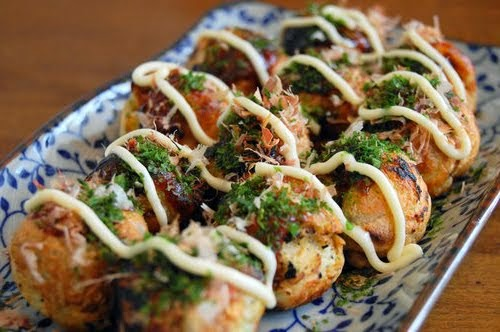
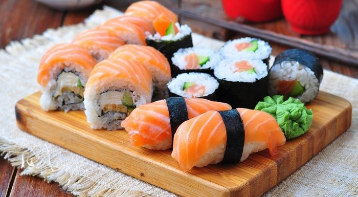
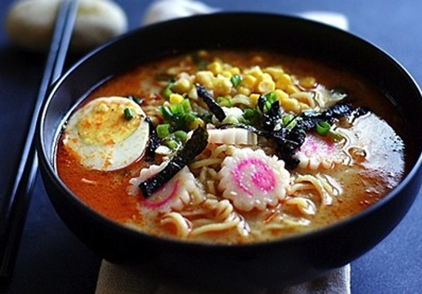

-

Takoyaki Hot Little Balls
Takoyaki adalah salah satu cemilan enak
yang berasal dari Kansai, Jepang. Makanan yang satu ini berbentuk bulat kecil-kecil serupa bola pingpong. -

Sushi Rice with Meat
Sushi adalah makanan Jepang yang terdiri
dari nasi yang dibentuk bersama lauk berupa makanan laut, daging, sayuran mentah atau yang sudah dimasak. -

Mie Ramen Delicious Noodles
Ramen adalah mie kuah Jepang yang
sebenarnya berasal dari Cina dan telah menjadi hidangan yang sangat populer di Jepang.
Japanese Food
Responsive Website Templates